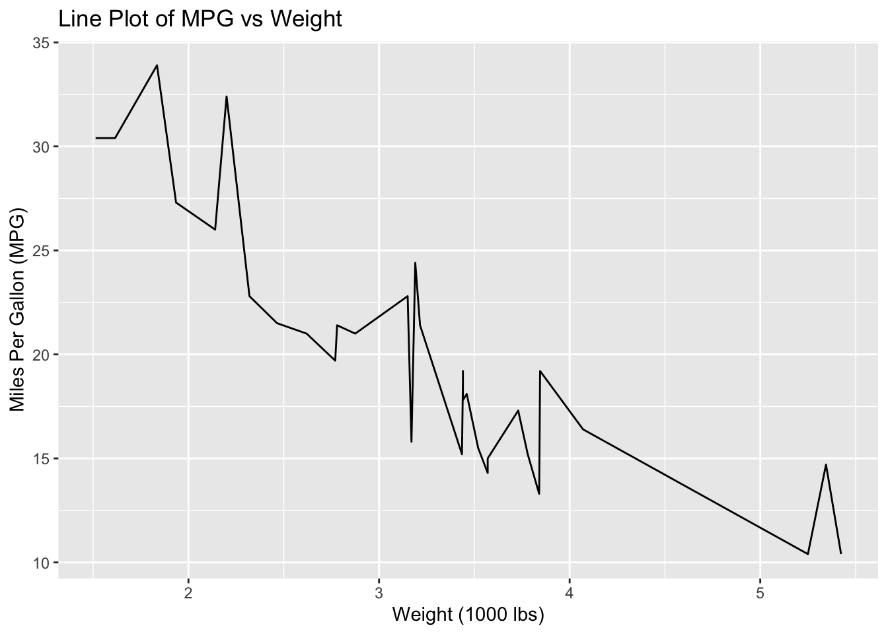
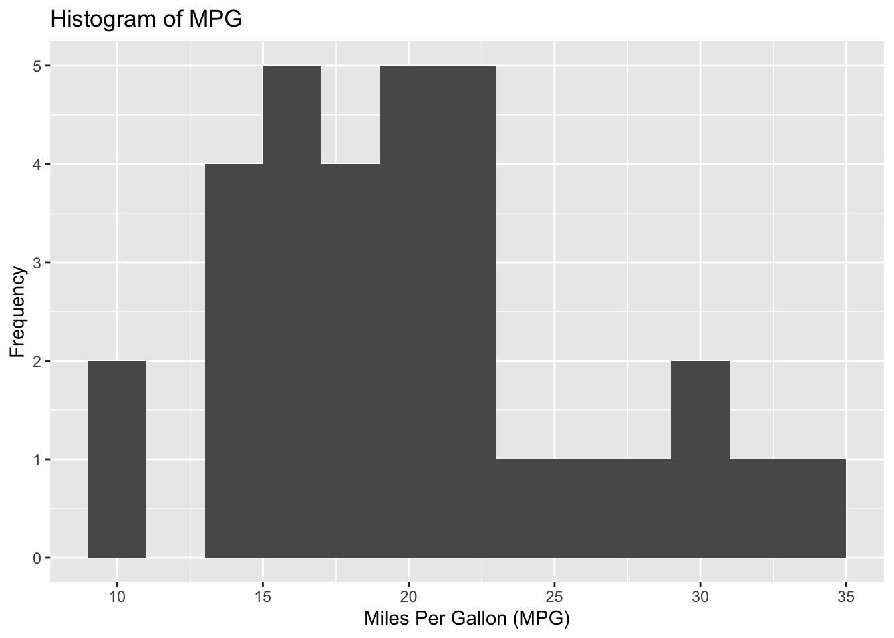
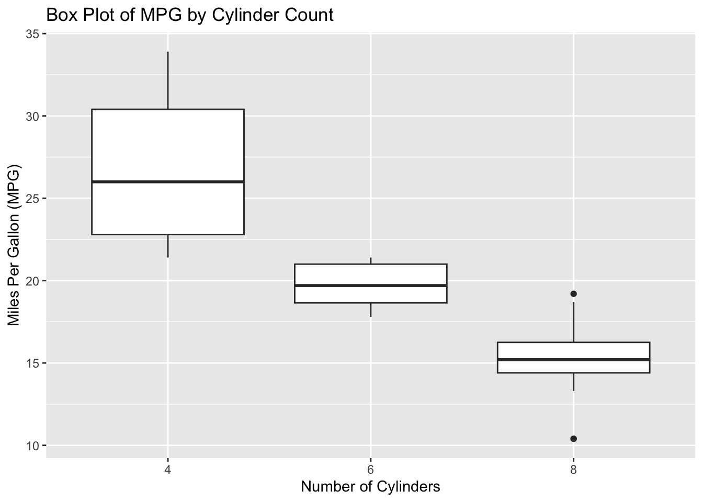
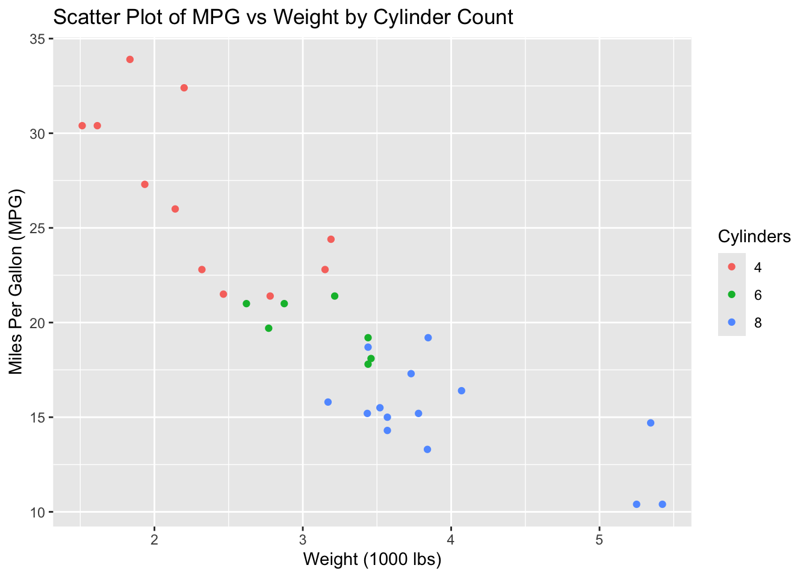
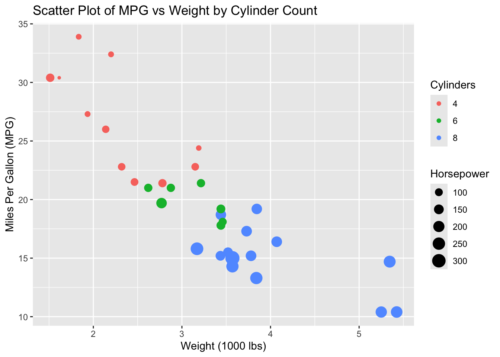

If you’re new to RStudio, you’ve come to the right place. Beyond my advanced projects, I’ve created this beginner-friendly page to share some basic computations. Whether you’re an employer or a colleague visiting, I’m delighted to have your interest.
We all have our first “sense of horror” moment when we first encounter RStudio. For me, it was during my first year in a biostatistics class with my teacher, Tessa. She had us working on projects using RStudio during class, and those initial weeks were chaotic. We were all frustrated and terrified by what appeared on our screens—scary red errors seemed to pop up every second, and we felt like we were making no progress at all. However, Tessa remained by our side. She dedicated the beginning of every class to addressing the typical errors we encountered, guiding us toward smart tactics and helpful online resources.
By the end of the semester, our perception of RStudio had completely changed. Tessa helped us realize that it wasn’t some dark abyss from which no student returns; it was a powerful tool that made statistics easier to compute. We bid farewell to the daunting equations we were accustomed to and began computing statistical techniques at a rapid pace. To this day, every one of my classmates continues to use RStudio with excitement and without fear. This software is truly your best friend if you use it wisely.
My Learning Journey
Asking for Help
Packages
Functions
Data Visualization
1. Asking for Help
Most experts mention asking for help at the end of their tutorials, but I believe it deserves to be first. Learning R involves seeking assistance a lot. There are countless online resources available to answer your questions. Below are some of my favorite resources:
The Help Center in RStudio: Located in the bottom right pane of your window, the Help Center provides detailed explanations of each command in R. You can learn about the purpose of each function, as well as their sub-commands and properties.
YouTube: Useful tutorials for visual learners.
Reddit: A community where everyone deals with problems using R. Visit Reddit to view a wide range of questions and answers from people around the globe.
ChatGPT: Appropriate in certain circumstances. Use with caution, as ChatGPT can occasionally produce incorrect solutions to your code.
By leveraging these resources, you can make your learning journey with R more efficient and less daunting.
2. Packages
R packages are collections of functions, data, and documentation that extend the capabilities of base R, making it easier and more efficient to perform a wide range of tasks. Here’s a brief overview of what R packages can do for new learners:
1. Simplify Complex Tasks
Packages can simplify complex tasks into manageable functions. For instance, data visualization with ggplot2 or data manipulation with dplyr breaks down intricate processes into straightforward commands.
2. Enhance Data Analysis
Packages like tidyverse offer tools for data import, tidying, transformation, visualization, and modeling. These integrated tools follow a consistent philosophy, making data analysis more intuitive.
3. Provide Specialized Tools
There are packages for almost every field and application, from bioinformatics (Bioconductor) to finance (quantmod). These packages provide specialized functions tailored to specific tasks, saving time and effort.
4. Improve Data Visualization
Packages such as ggplot2, plotly, and shiny help create advanced and interactive data visualizations. This makes it easier to explore and communicate data insights.
5. Streamline Workflow
Packages like knitr and rmarkdown allow for dynamic report generation, integrating code and its output in a single document. This streamlines the workflow from data analysis to reporting.
6. Access Vast Amounts of Data
Packages like dplyr and tidyr help in efficiently handling and processing large datasets. This is particularly useful for big data applications where performance is crucial.
7. Encourage Reproducibility
Using packages ensures that your code is reproducible. The functions are well-documented and tested, reducing the chances of errors and improving the reliability of your analysis.
8. Support Community and Learning
The R community is robust, with packages often accompanied by comprehensive documentation, tutorials, and vignettes. This makes it easier for learners to understand and implement new techniques.
3. Functions
When I learned how to create my own functions, I felt like the creative side of R expanded beyond my expectations. I could tailor a command to address exactly what I needed to perform on a given set of data.
The function() command is a fundamental building block in R, enabling users to create their own functions. This is crucial for both simplifying repetitive tasks and organizing code in a clean, efficient manner. Here’s what the function() command can do for new learners using R:
1. Encapsulate Repetitive Tasks
Creating functions allows you to encapsulate repetitive code into reusable blocks. This reduces redundancy and makes your scripts more concise and readable. For example, if you frequently perform the same data transformation, you can write a function for it and call it whenever needed.
2. Organize Code
Functions help in organizing code logically. By breaking down complex procedures into smaller, manageable functions, you make your code more modular and easier to debug and maintain.
3. Improve Readability
Using functions can significantly enhance the readability of your code. Descriptive function names and clear parameter definitions help others (and your future self) understand the purpose and usage of the code more quickly.
4. Parameterization
Functions allow you to use parameters to make your code more flexible. Instead of hard-coding values, you can pass different arguments to your functions, making them adaptable to various inputs and scenarios.
5. Enhance Reproducibility
Functions contribute to reproducibility in your analyses. By encapsulating specific tasks, you ensure that the same operations can be repeated with different data or settings, leading to consistent results.
6. Promote Code Reuse
Once you write a function, you can reuse it across different projects. This saves time and effort, as you don’t need to rewrite the same code for similar tasks.
7. Encourage Best Practices
Writing functions encourages good programming practices, such as documenting code and testing individual components. This can lead to more robust and error-free scripts.
Example of Using function() in R
# Define a function to calculate the mean of a numeric vectorcalculate_mean <-function(numbers) {if(!is.numeric(numbers)) {stop("Input must be a numeric vector") } mean_value <-mean(numbers)return(mean_value)}# Use the function with a numeric vectorsample_data <-c(4, 8, 15, 16, 23, 42)average <-calculate_mean(sample_data)print(average)
[1] 18
4. Data Visualization
Let’s explore one of my favorite, and also one of the most essential packages in R, ggplot2.
1. Installation and Loading
First, you need to install and load the ggplot2 package:
The downloaded binary packages are in
/var/folders/k3/v39j6g_x4bv7mv_xq03986d00000gn/T//RtmpJ6EGX9/downloaded_packages
library(ggplot2)
2. Basic Components
ggplot2follows the grammar of graphics, which means you build plots layer by layer. The essential components are:
Data: The dataset you’re plotting.
Aesthetics (aes): The mapping of variables to visual properties like x and y coordinates, colors, sizes, etc.
Geometries (geom): The type of plot you want to create (e.g., points, lines, bars).
Facets: Subplots based on the values of one or more variables.
Scales: Control how data values are mapped to visual properties.
Coordinate Systems: Control the coordinate space.
Themes: Control the appearance of the plot.3. Basic Plot Types
Scatter Plot
# Load example datadata(mtcars)# Create a scatter plotggplot(data = mtcars, aes(x = wt, y = mpg)) +geom_point() +labs(title ="Scatter Plot of MPG vs Weight",x ="Weight (1000 lbs)",y ="Miles Per Gallon (MPG)")
Line Plot
# Create a line plotggplot(data = mtcars, aes(x = wt, y = mpg)) +geom_line() +labs(title ="Line Plot of MPG vs Weight",x ="Weight (1000 lbs)",y ="Miles Per Gallon (MPG)")

Bar Plot
# Create a bar plotggplot(data = mtcars, aes(x =factor(cyl))) +geom_bar() +labs(title ="Bar Plot of Cylinder Counts",x ="Number of Cylinders",y ="Count")
Histogram
# Create a histogramggplot(data = mtcars, aes(x = mpg)) +geom_histogram(binwidth =2) +labs(title ="Histogram of MPG",x ="Miles Per Gallon (MPG)",y ="Frequency")

Box Plot
# Create a box plotggplot(data = mtcars, aes(x =factor(cyl), y = mpg)) +geom_boxplot() +labs(title ="Box Plot of MPG by Cylinder Count",x ="Number of Cylinders",y ="Miles Per Gallon (MPG)")

4. Customizing Plots
Adding Colors
# Scatter plot with colorggplot(data = mtcars, aes(x = wt, y = mpg, color =factor(cyl))) +geom_point() +labs(title ="Scatter Plot of MPG vs Weight by Cylinder Count",x ="Weight (1000 lbs)",y ="Miles Per Gallon (MPG)",color ="Cylinders")

Adding Size
# Scatter plot with color and sizeggplot(data = mtcars, aes(x = wt, y = mpg, color =factor(cyl), size = hp)) +geom_point() +labs(title ="Scatter Plot of MPG vs Weight by Cylinder Count",x ="Weight (1000 lbs)",y ="Miles Per Gallon (MPG)",color ="Cylinders",size ="Horsepower")

Faceting
# Faceted scatter plotggplot(data = mtcars, aes(x = wt, y = mpg)) +geom_point() +facet_wrap(~ cyl) +labs(title ="Scatter Plot of MPG vs Weight by Cylinder Count",x ="Weight (1000 lbs)",y ="Miles Per Gallon (MPG)")
Themes
# Scatter plot with themeggplot(data = mtcars, aes(x = wt, y = mpg)) +geom_point() +labs(title ="Scatter Plot of MPG vs Weight",x ="Weight (1000 lbs)",y ="Miles Per Gallon (MPG)") +theme_minimal()